library(tidyverse)
library(brms)
library(cmdstanr)
library(tidybayes)
library(ggpubr)
library(marginaleffects)
library(splines)
library(patchwork)Case Study - Effects of snow cover characteristics and reproduction on body mass in bighorn sheep (Ovis canadensis)
Here, we display the use of the visualization method for indirect effects with a real-world example of the carry-over effects of snow cover characteristics on subsequent spring and automn mass of bighorn sheep on Ram mountain (Alberta, CAN). The original article by Crémel et al. can be found at LINK. This use case is more complex than the ones presented in the original article describing the method (LINK) as there is more than one mediator involved and in some cases, the exposure interacts with a mediator and in another case, the exposure interacts with a mediator and both mediators interact with one-another. We will display how the visualization method can be used to make such complex relationships more intuitive to interpret.
The full DAGs for the three analyses we will be working here can be found below:
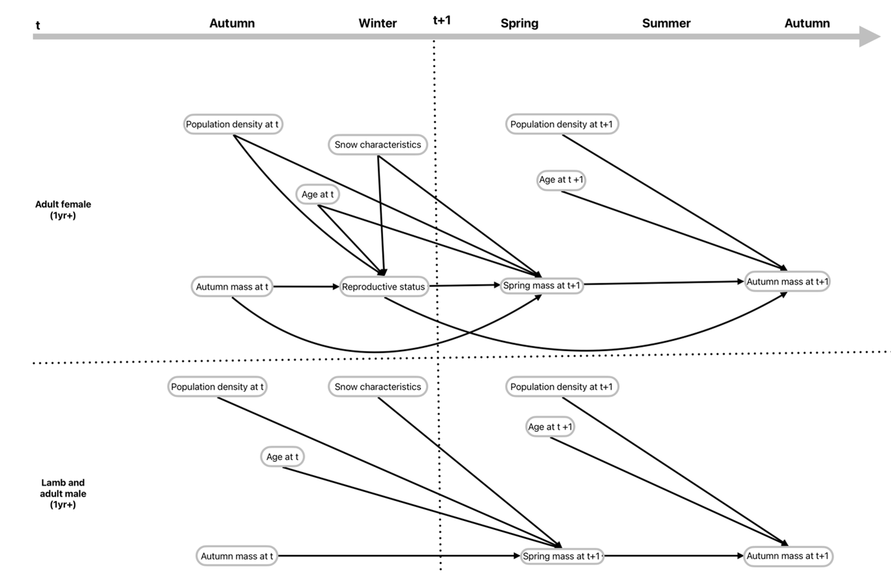
To better understand the DAGs and relationships, readers are referred to the original publication.
Set up workspace
Load packages
Load data and models
data_all <- readRDS("mass_loss_data_all_Kallan_Cremel.rds")
# Female data and model
## data
Data_females_uns <- data_all$Data_females_uns
## Model
Mass_loss_female_repro_int <- readRDS("Mass_loss_female_repro_int_uns_Kallan_Cremel.rds")
# Lamb data and model
## data
Data_lambs_uns <- data_all$Data_lambs_uns
## Model
Mass_loss_lamb <- readRDS("Mass_loss_lamb_uns_Kallan_Cremel.rds")
# Male data and model
## data
### Scaled (for model)
Data_male_scaled <- data_all$Data_male_scaled
### Unscaled (for unscaling predictions)
Data_males_uns <- data_all$Data_males_uns
## Model
Mass_loss_male_pop <- readRDS("Mass_loss_male_pop_Kallan_Cremel.rds")Female model
Here, we look at the following DAG: 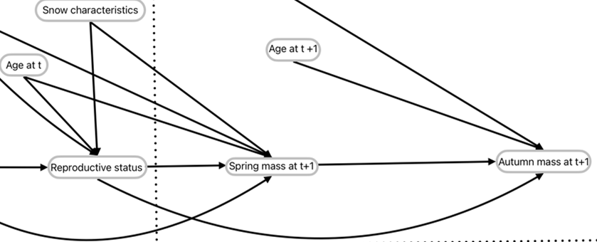
We will focus on Snow characteristics, reproductive status, spring mass t+1, and autumn mass t+1. In the model, snow characteristics is actually three variables that each interact with Reproductive status for their respective effects on spring mass t+1. Then, Spring mass t+1 interacts with reproductive status for its effect on autumn mass t+1.
The three-equation model is defined in brms as such:
f_repro <- bf(lead_repro ~ 1 + ns(Age, 3) + wtd114 + pop_den + avg_snow_depth + days_count + median_density + (1 | ID) + (1 | Yr),
family = bernoulli(link = "logit"))
f_t_int <- bf(next_wtd12 ~ 1 + wtd114 + ns(Age, 3) + pop_den +
lead_repro * avg_snow_depth +
lead_repro * days_count +
lead_repro * median_density +
(1 | ID) + (1 | Yr),
family = gaussian())
f_t1 <- bf(wtd114_next ~ 1 + lead_repro*next_wtd12 + ns(Age_next, 3) + pop_den_next + (1 | ID) + (1 | Yr_next),
family = gaussian())
Mass_loss_female_repro_int <- brm(
f_repro + f_t_int + f_t1,
data = Data_females_uns,
set_rescor(FALSE),
cores = 4, threads = threading(2), backend = "cmdstanr",warmup = 2000, iter = 6000, chains = 4
)Crémel et al. plot all of the direct effects in the DAG so we will not be repeating this here. We will only focus on the interacting effect of snow variables with reproductive status on spring mass and the interacting effect of spring mass and reproductive status on autumn mass. For the demonstration, we will work only with Average snow depth as the Snow variable. See Crémel et al. for all indirect effects.
Spring mass ~ Snow * Reproductive status
col_repro <- c("Non-reproductive" = "#d95f02", "Reproductive" = "#2ca25f")
p_smass_snow <- predictions(Mass_loss_female_repro_int,
newdata = datagrid(avg_snow_depth = seq(from = min(Data_females_uns$avg_snow_depth),
to = max(Data_females_uns$avg_snow_depth),
by = 1),
lead_repro = c(0,1)),
re_formula = NA, # Population-level predictions
type = "response", # epred
resp = "nextwtd12") |> # spring mass
get_draws(shape = "rvar") |> # convert to rvar
mutate(Reproduction_status = factor(lead_repro,
levels = c(0, 1),
labels = c("Non-reproductive", "Reproductive"))) Loading required namespace: rstanplot_smass_snow <- ggplot() +
stat_lineribbon(data = p_smass_snow, aes(x = avg_snow_depth, ydist = rvar, fill = Reproduction_status),
.width = seq(0.5, 0.95, length.out = 20),
alpha = 0.05, color = "black") +
guides(fill = guide_legend(override.aes = list(alpha = 1, fill = NA, color = col_repro))) +
scale_fill_manual(values = col_repro) +
labs(
x = "Average snow depth (cm)",
y = "Spring mass (kg)",
fill = "Reproduction status (t+1)"
) +
theme_pubr() +
theme(legend.position = "inside",
legend.position.inside = c(0.2, 0.2))
plot_smass_snow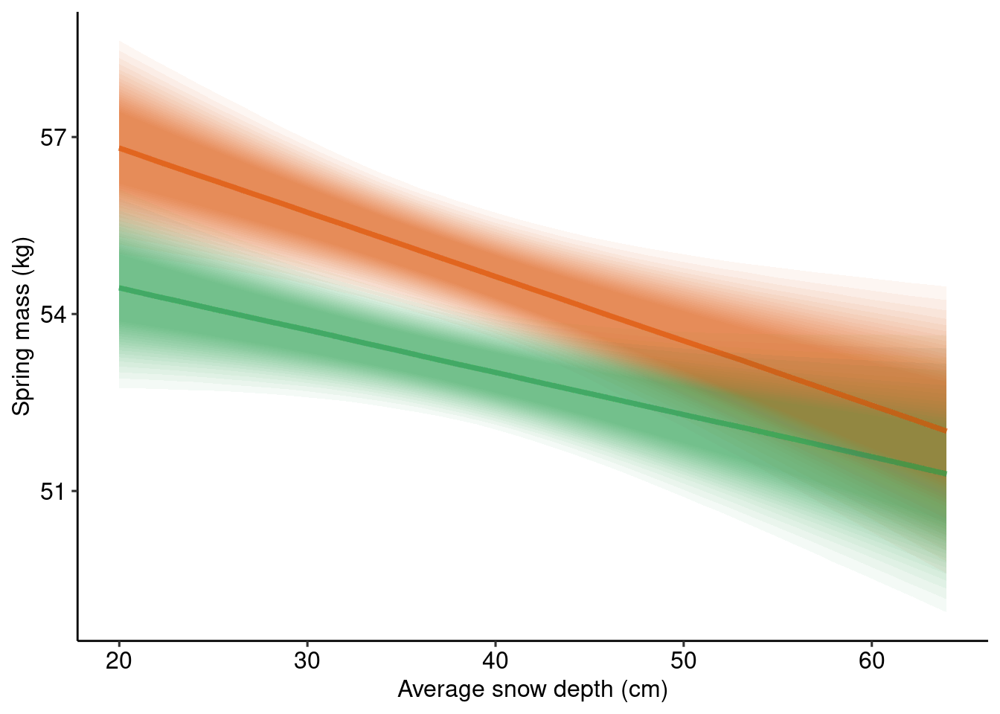
Autumn mass ~ Spring mass * Reproductive status
p_amass_smass <- predictions(Mass_loss_female_repro_int,
newdata = datagrid(next_wtd12 = seq(from = min(Data_females_uns$next_wtd12),
to = max(Data_females_uns$next_wtd12),
by = 1),
lead_repro = c(0,1)),
re_formula = NA, # Population-level predictions
type = "response", # epred
resp = "wtd114next") |> # autumn mass
get_draws(shape = "rvar") |> # convert to rvar
mutate(Reproduction_status = factor(lead_repro,
levels = c(0, 1),
labels = c("Non-reproductive", "Reproductive")))
plot_amass_smass <- ggplot() +
stat_lineribbon(data = p_amass_smass, aes(x = next_wtd12, ydist = rvar, fill = Reproduction_status),
.width = seq(0.5, 0.95, length.out = 20),
alpha = 0.05, color = "black") +
scale_fill_manual(values = col_repro) +
guides(fill = guide_legend(override.aes = list(alpha = 1, fill = NA, color = col_repro))) +
labs(
x = "Spring mass (kg)",
y = "Autumn mass (kg)",
fill = "Reproduction status (t+1)"
) +
theme_pubr() +
theme(legend.position = "inside",
legend.position.inside = c(0.2, 0.8))
plot_amass_smass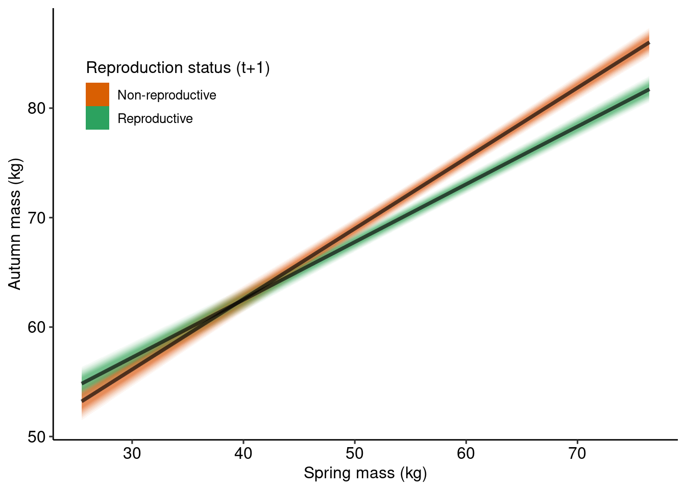
Indirect effect of snow on autumn mass
Predictions
We want to predict autumn mass from the predicted values of spring mass as a function of snow depth and reproductive status
# the estimate column of p_smass_snow is the median of the posterior distribution
# Let's simplify the prediction object to work with after
p_smass_snow |>
as_tibble() |>
select(estimate, avg_snow_depth, lead_repro) |>
rename(next_wtd12 = estimate) -> spring_mass_pred
# Custom prediction grid
datagrid(model = Mass_loss_female_repro_int,
next_wtd12 = spring_mass_pred$next_wtd12) |>
# need to add lead_repro separately as grid_type = "dataframe" argument throws an error
select(-lead_repro) |>
left_join(spring_mass_pred |> select(next_wtd12, lead_repro)) -> f_snow_indirect_pred_grid
# Predictions
p_ind_snow_smass <- predictions(Mass_loss_female_repro_int,
newdata = f_snow_indirect_pred_grid,
re_formula = NA, # Population-level predictions
type = "response", # epred
resp = "wtd114next") |> # autumn mass
mutate(Reproduction_status = factor(lead_repro,
levels = c(0, 1),
labels = c("Non-reproductive", "Reproductive"))) |>
# Add snow values from spring mass prediction grid
select(-avg_snow_depth) |>
left_join(spring_mass_pred)plot
COLS <- alpha(colorRampPalette(c("#d0ddd6","#47a6ddb7"))(30),0.8)
plot_amass_smass +
geom_line(data = p_ind_snow_smass, aes(x = next_wtd12, y = estimate, color = avg_snow_depth, linewidth = avg_snow_depth, group = Reproduction_status), lineend = "round") +
scale_color_gradientn(colours = COLS, name = "Avg Snow Depth") +
guides(linewidth = "none") +
theme(legend.direction = "horizontal",
legend.position = "bottom")
The indirect effect is small compared to the direct effect so let’s zoom in a little
plot_amass_smass +
geom_line(data = p_ind_snow_smass, aes(x = next_wtd12, y = estimate, color = avg_snow_depth, linewidth = avg_snow_depth, group = Reproduction_status), lineend = "round") +
scale_color_gradientn(colours = COLS, name = "Avg Snow Depth") +
guides(linewidth = "none") +
theme(legend.direction = "horizontal",
legend.position = "bottom") +
coord_cartesian(xlim = c(50, 60), ylim = c(60, 80))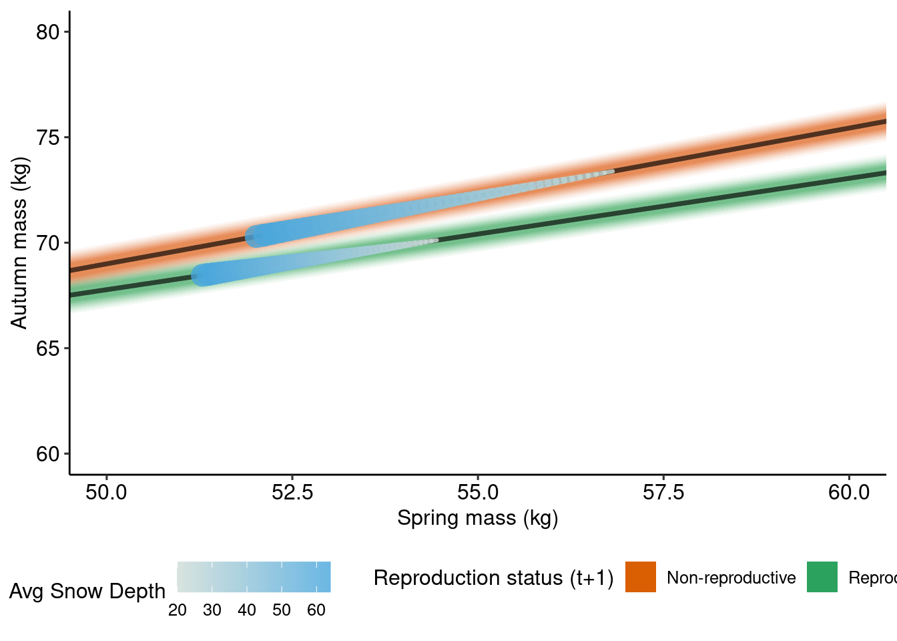
Lamb model
Here, we look at the following DAG: 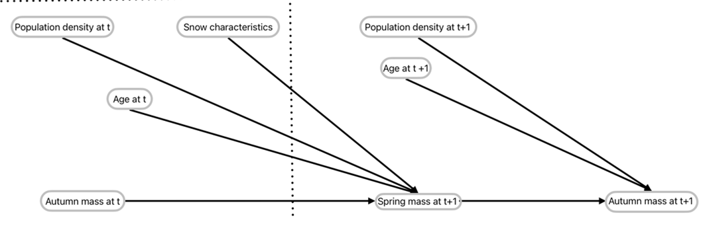
We will focus on Snow characteristics, sex, spring mass t+1, and autumn mass t+1. In the model, snow characteristics is actually three variables that each interact with sex for their respective effects on spring mass t+1. Then, Spring mass t+1 interacts with sex for its effect on autumn mass t+1.
The two-equation model is defined in brms as such:
f_lamb_t <- bf(next_wtd12 ~ 1 + Sex*(wtd114 + pop_den + avg_snow_depth + days_count + median_density) + (1 | Yr), family = gaussian())
f_lamb_t1 <- bf(wtd114_next ~ 1 + Sex*(next_wtd12 + pop_den_next) + (1 | Yr_next), family = gaussian())
Mass_loss_lamb <- brm(
f_lamb_t + f_lamb_t1,
data = Data_lambs_uns, set_rescor(FALSE), cores=4, threads = threading(2), backend="cmdstanr", warmup = 2000, iter = 6000
) Crémel et al. plot all of the direct effects in the DAG so we will not be repeating this here. We will only focus on the interacting effect of snow variables with sex on spring mass and the interacting effect of spring mass and sex on autumn mass. For the demonstration, we will work only with Average snow depth as the Snow variable. See Crémel et al. for all indirect effects.
Spring mass ~ Snow * Reproductive status
col_sex <- c("Male" = "#d95f02", "Female" = "#2ca25f")
p_smass_snow_lambs <- predictions(Mass_loss_lamb,
newdata = datagrid(avg_snow_depth = seq(from = min(Data_lambs_uns$avg_snow_depth),
to = max(Data_lambs_uns$avg_snow_depth),
by = 1),
Sex = c("Male", "Female")),
re_formula = NA, # Population-level predictions
type = "response", # epred
resp = "nextwtd12") |> # spring mass
get_draws(shape = "rvar") # convert to rvar
plot_smass_snow_lambs <- ggplot() +
stat_lineribbon(data = p_smass_snow_lambs, aes(x = avg_snow_depth, ydist = rvar, fill = Sex),
.width = seq(0.5, 0.95, length.out = 20),
alpha = 0.05, color = "black") +
guides(fill = guide_legend(override.aes = list(alpha = 1, fill = NA, color = col_sex))) +
scale_fill_manual(values = col_sex, labels = c("Male", "Female")) +
labs(
x = "Average snow depth (cm)",
y = "Spring mass (kg)",
fill = "Sex"
) +
theme_pubr() +
theme(legend.position = "inside",
legend.position.inside = c(0.2, 0.2))
plot_smass_snow_lambs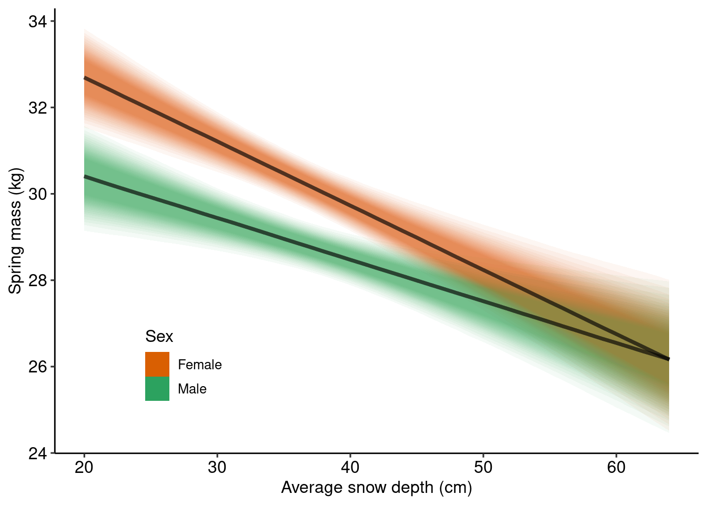
Autumn mass ~ Spring mass * Sex
p_amass_smass_lambs <- predictions(Mass_loss_lamb,
newdata = datagrid(next_wtd12 = seq(from = min(Data_lambs_uns$next_wtd12),
to = max(Data_lambs_uns$next_wtd12),
by = 1),
Sex = c("Male", "Female")),
re_formula = NA, # Population-level predictions
type = "response", # epred
resp = "wtd114next") |> # autumn mass
get_draws(shape = "rvar") # convert to rvar
plot_amass_smass_lambs <- ggplot() +
stat_lineribbon(data = p_amass_smass_lambs, aes(x = next_wtd12, ydist = rvar, fill = Sex),
.width = seq(0.5, 0.95, length.out = 20),
alpha = 0.05, color = "black") +
scale_fill_manual(values = col_sex, labels = c("Male", "Female")) +
guides(fill = guide_legend(override.aes = list(alpha = 1, fill = NA, color = col_sex))) +
labs(
x = "Spring mass (kg)",
y = "Autumn mass (kg)",
fill = "Sex"
) +
theme_pubr() +
theme(legend.position = "inside",
legend.position.inside = c(0.2, 0.8))
plot_amass_smass_lambs
Indirect effect of snow on autumn mass
Predictions
We want to predict autumn mass from the predicted values of spring mass as a function of snow depth and Sex
# the estimate column of p_smass_snow is the median of the posterior distribution
# Let's simplify the prediction object to work with after
p_smass_snow_lambs |>
as_tibble() |>
select(estimate, avg_snow_depth, Sex) |>
rename(next_wtd12 = estimate) -> spring_mass_pred_lambs
# Custom prediction grid
datagrid(model = Mass_loss_lamb,
next_wtd12 = spring_mass_pred_lambs$next_wtd12) |>
# need to add Sex separately as grid_type = "dataframe" argument throws an errorr
select(-Sex) |>
left_join(spring_mass_pred_lambs |> select(next_wtd12, Sex)) -> f_snow_indirect_pred_grid_lambs
# Predictions
p_ind_snow_smass_lambs <- predictions(Mass_loss_lamb,
newdata = f_snow_indirect_pred_grid_lambs,
re_formula = NA, # Population-level predictions
type = "response", # epred
resp = "wtd114next") |> # autumn mass
# Add snow values from spring mass prediction grid
select(-avg_snow_depth) |>
left_join(spring_mass_pred_lambs)plot
COLS <- alpha(colorRampPalette(c("#d0ddd6","#47a6ddb7"))(30),0.8)
plot_amass_smass_lambs +
geom_line(data = p_ind_snow_smass_lambs, aes(x = next_wtd12, y = estimate, color = avg_snow_depth, linewidth = avg_snow_depth, group = Sex), lineend = "round") +
scale_color_gradientn(colours = COLS, name = "Avg Snow Depth") +
guides(linewidth = "none") +
theme(legend.direction = "horizontal",
legend.position = "bottom")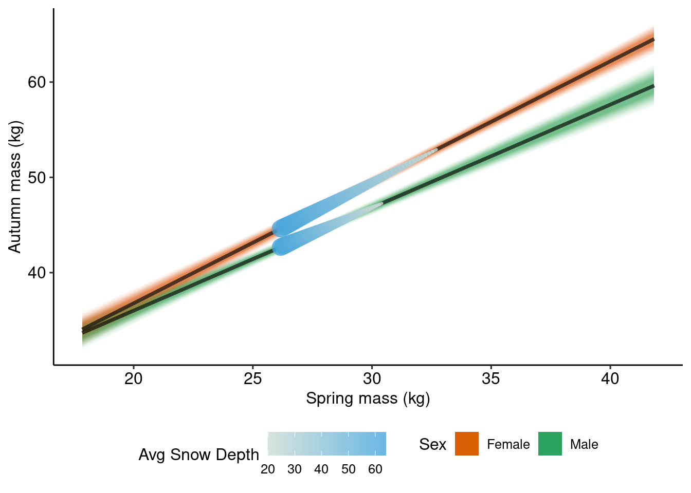
Male model
Here, we look at the following DAG:
We will focus on Snow characteristics, sex, spring mass t+1, and autumn mass t+1. In the model, snow characteristics is actually three variables that each interact with population density for their respective effects on spring mass t+1. However, in this case, Spring mass t+1 dopes not interact with population density for its effect on autumn mass t+1. There still will be an interaction present in the indirect effects but not through the mediator most immediate to the outcome.
The two-equation model is defined in brms as such:
f_male_t1 <- bf(wtd114_next ~ 1 + scale(next_wtd12) + ns(Age_next, 3) + pop_den_next + (1 | ID) + (1 | Yr_next), family = gaussian())
f_male_pop_t <- bf(next_wtd12 ~ 1 + wtd114 + ns(Age, 3) +
pop_den * avg_snow_depth +
pop_den * days_count +
pop_den * median_density +
(1 | ID) + (1 | Yr),
family = gaussian())
Mass_loss_male_pop <- brm(
f_male_pop_t + f_male_t1,
data = Data_male_scaled,
set_rescor(FALSE),
cores = 4, chains = 4, warmup = 2000, iter = 6000, threads = threading(2),
backend = "cmdstanr"
)The added particularity with this specific example is that the predictors are scaled so we will be unscaling and re-scaling throughout.
Spring mass ~ Snow * Population density
p_smass_snow_males <- predictions(Mass_loss_male_pop,
newdata = datagrid(median_density = seq(from = min(Data_male_scaled$median_density),
to = max(Data_male_scaled$median_density),
by = 0.1),
pop_den = c(-1, 0, 1)), # -1 SD, average, +1 SD
re_formula = NA, # Population-level predictions
type = "response", # epred
resp = "nextwtd12") |> # spring mass
get_draws(shape = "rvar") # convert to rvar
# average and sd of raw data to unscale predictors
sd_den <- sd(Data_males_uns$median_density)
m_den <- mean(Data_males_uns$median_density)
sd_pop <- sd(Data_males_uns$pop_den)
m_pop <- mean(Data_males_uns$pop_den)
# unscale
p_smass_snow_males <- p_smass_snow_males |>
mutate(median_density_uns = median_density * sd_den + m_den,
pop_den_uns = pop_den * sd_pop + m_pop) |>
# add labels for plot
mutate(Pop_Density_Label = factor(
paste0(round(pop_den_uns, 0)),
levels = unique(paste0(round(pop_den_uns, 0)))
)
)
plot_smass_snow_males <- ggplot() +
stat_lineribbon(data = p_smass_snow_males, aes(x = median_density_uns, ydist = rvar, fill = Pop_Density_Label),
.width = seq(0.5, 0.95, length.out = 20),
alpha = 0.05, color = "black") +
guides(fill = guide_legend(override.aes = list(alpha = 1, fill = NA, color = c("#1b9e77", "#d95f02", "#7570b3")))) +
scale_fill_manual(values = c("#1b9e77", "#d95f02", "#7570b3")) +
labs(
x = expression("Median snow density " (kg/m^3)),
y = "Spring mass (kg)",
fill = "Population density" ~ (ind),
) +
theme_pubr() +
theme(legend.position = "inside",
legend.position.inside = c(0.3, 0.7))
plot_smass_snow_males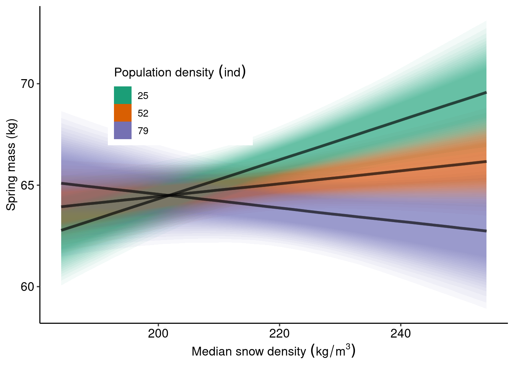
Autumn mass ~ Spring mass
There is a little particularity here. To make the SEM work in brms, Kallan scaled spring mass (next_wtd12) in the model formula rather than in the dataset. We don`t need to scale or unscale spring mass for the predictions.
p_amass_smass_males <- predictions(Mass_loss_male_pop,
newdata = datagrid(next_wtd12 = seq(from = min(Data_male_scaled$next_wtd12),
to = max(Data_male_scaled$next_wtd12),
by = 1)),
re_formula = NA, # Population-level predictions
type = "response", # epred
resp = "wtd114next") |> # autumn mass
get_draws(shape = "rvar") # convert to rvar
plot_amass_smass_males <- ggplot() +
stat_lineribbon(data = p_amass_smass_males, aes(x = next_wtd12, ydist = rvar),
.width = seq(0.5, 0.95, length.out = 20),
alpha = 0.05, color = "black", fill = "grey67") +
labs(
x = "Spring mass (kg)",
y = "Autumn mass (kg)"
) +
theme_pubr()
plot_amass_smass_males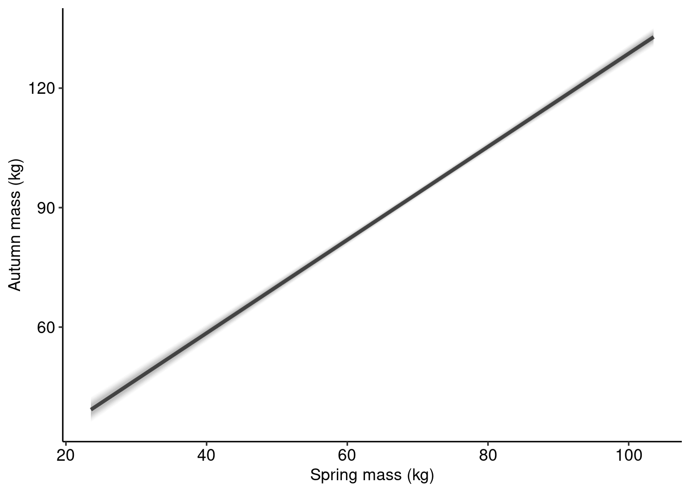
Indirect effect of snow on autumn mass | population density
This visualization is a bit tricky as the mediator (spring mass) does not interact with another variable for its effect on the outcome (autumn mass). However, the exposure (snow density) interacts with another exposure (population density) on the mediator (spring mass) and has no direct effect on the outcome (autumn mass).
p_smass_snow_males |>
as_tibble() |>
select(estimate, Pop_Density_Label, median_density_uns) |>
rename(next_wtd12 = estimate) -> spring_mass_pred_males
# Custom prediction grid
datagrid(model = Mass_loss_male_pop,
next_wtd12 = spring_mass_pred_males$next_wtd12) |>
# need to add other columns separately as grid_type = "dataframe" argument throws an error
left_join(spring_mass_pred_males |> select(next_wtd12, Pop_Density_Label, median_density_uns)) -> f_snow_indirect_pred_grid_malesJoining with `by = join_by(next_wtd12)`p_ind_snow_smass_males <- predictions(Mass_loss_male_pop,
newdata = f_snow_indirect_pred_grid_males,
re_formula = NA, # Population-level predictions
type = "response", # epred
resp = "wtd114next") |> # autumn mass
select(estimate, next_wtd12, Pop_Density_Label, median_density_uns)
plot_ind_snow_males <- ggplot() +
geom_line(data = p_ind_snow_smass_males, aes(x = next_wtd12, y = estimate, color = median_density_uns, linewidth = median_density_uns), lineend = "round") +
scale_color_gradientn(colours = COLS, name = "Med Snow Density") +
guides(linewidth = "none") +
facet_wrap(~ Pop_Density_Label) +
theme(legend.direction = "horizontal",
legend.position = "bottom") +
labs(
x = "Spring mass (kg)",
y = "Autumn mass (kg)"
) +
theme_pubr()
plot_ind_snow_males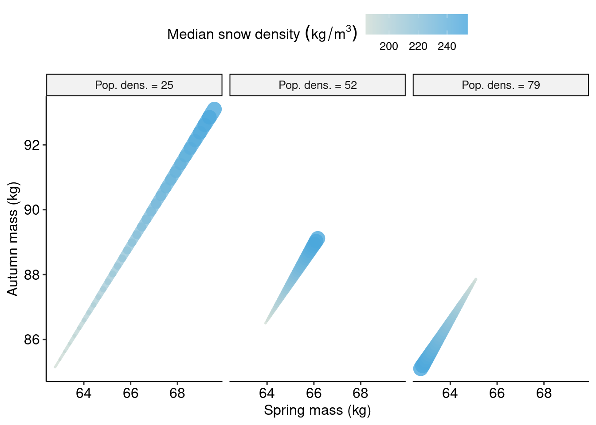
Now, we combine all plots
(plot_smass_snow_males + plot_amass_smass_males) / plot_ind_snow_males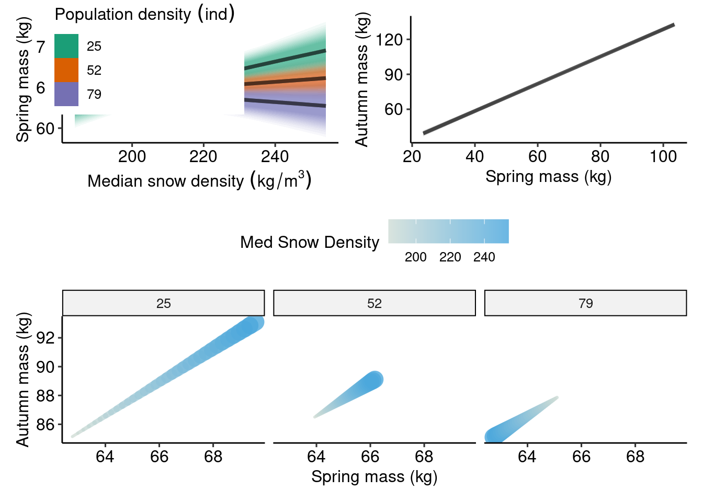
We can see here that snow density has a stronger positive effect through spring mass on autumn when population density is low compared to a weaker but negative effect when population density is high.